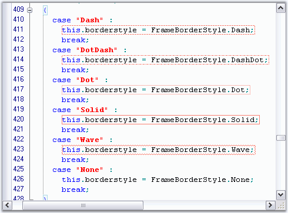

This section discusses how borders can be set for the text in the Edit Control.
Edit Control supports borders for its text by using the methods given below.
|
Edit Control Method |
Description |
|
SetTextBorder |
Sets border around text. |
|
RemoveTextBorder |
Removes border around text with given coordinates. |
|
Edit Control Border Enumerator |
Description |
|
FrameBorderStyle |
Specifies the style of border line. The options provided are
· Dash · DashDot · Dot · None · Solid · Wave |
|
BorderWeight |
Specifies the weight of the border line. The options provided are
· Bold · Double · Thin |
|
[C#]
// Set borders for the specified text range. this.editControl1.SetTextBorder(new Point(1, 13), new Point(15, 13), Color.Red, FrameBorderStyle.Wave, BorderWeight.Double);
// Remove borders from the specified text range. this.editControl1.RemoveTextBorder(new Point(1, 13), new Point(15, 13); |
|
[VB.NET]
' Set borders for the specified text range. Me.editControl1.SetTextBorder(New Point(1, 13), New Point(15, 13), Color.Red, FrameBorderStyle.Wave, BorderWeight.Double)
' Remove borders from the specified text range. Me.editControl1.RemoveTextBorder(New Point(1, 13), New Point(15, 13) |

Figure 40: Text Borders in Edit Control
A sample which demonstrates the above feature is available in the following sample installation path.
..\My Documents\Syncfusion\EssentialStudio\Version Number\Windows\Edit.Windows\Samples\2.0\Advanced Editor Functions\BordersDemo
See Also
Underlines, Wavelines and StrikeThrough